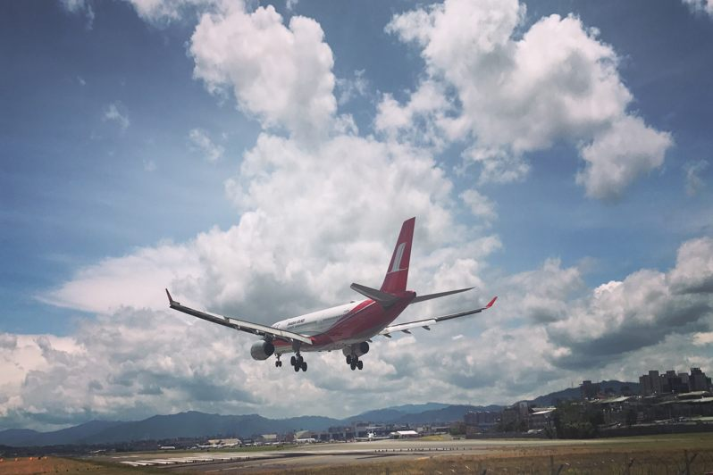
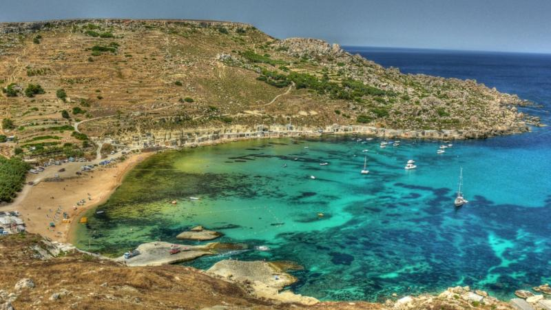
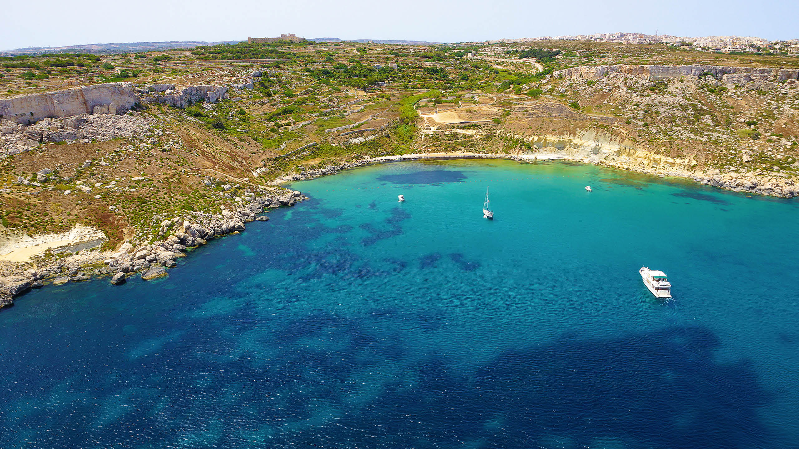

Itinerario 1 - Mare Selvaggio & Città Storiche
Un itinerario perfetto per chi vuole alternare spiagge spettacolari e autentiche (come Imġiebaħ e Qarraba) a piccoli assaggi di cultura maltese: dalla storica Mdina alla vivace Valletta. L'equilibrio tra natura e città rende il viaggio vario ma mai troppo stancante.
Ideale per: chi ama il mare wild ma vuole anche “sentire” un po' di storia e atmosfera locale.

Giorno 1: Lunedì 8 Settembre - Arrivo
- Pomeriggio/Sera: Arrivo a Malta, trasferimento in Bolt verso Sliema.
- Successivamente check-in e sistemazione nella camera.
- Sera: Passeggiata lungo la Promenade di Sliema.
Giorno 2: Martedì 9 Settembre - Recupero a Sliema Beach
- Mattina: Colazione in tranquillità e spesa.
- Pomeriggio: Sliema Beach.
- Sera: Rientro in appartamento, cena e uscita a St. Julian e Paceville.


Giorno 3: Mercoledì 10 Settembre - Blue Lagoon (Comino)
- Giornata intera: Partenza da Sliema con escursione in barca. Se possibile andare anche a Gozo e visitare, alla mattina, la Cittadella di Victoria. Al pomeriggio visitare la Blue Lagoon e fare il bagno.
- Tardo pomeriggio: Rientro a Sliema e cena
- Sera: Uscita a La Valletta.
Giorno 4: Giovedì 11 Settembre - Gnejna & Qarraba Bay
- Giornata intera: Transfer a Gnejna Bay in mattinata. Al pomeriggio trekking fino a Qarraba Bay. Relax, sole, foto panoramiche.
- Pomeriggio/Sera: Rientro a Sliema
- Sera: Cena e uscita.


Giorno 5: Venerdì 12 Settembre - St. Peter's Pool + Il-Kalanka
- Mattina: Trasferimento verso St. Peter's Pool (arrivare presto).
- Pomeriggio: Trekking verso Il-Kalanka Bay, più appartata.
- Sera: Rientro a Sliema. Cena e uscita.
Giorno 6: Sabato 13 Settembre - Imġiebaħ Bay
- Mattina: trasferimento alla scoperta di Imġiebaħ Bay, tra le più selvagge. Picnic consigliato (niente servizi)
- Pomeriggio: Rientro con tramonto a Mellieħa
- Sera: Cena speciale di chiusura viaggio e uscita.


Giorno 7: Domenica 14 Settembre - Partenza
- Mattina: Colazione + ultimo tuffo o shopping di souvenir a Sliema.
- Pomeriggio: Pranzo più trasferimento all'aeroporto entro le 16:50 per il volo di rientro previsto per le 19:50.